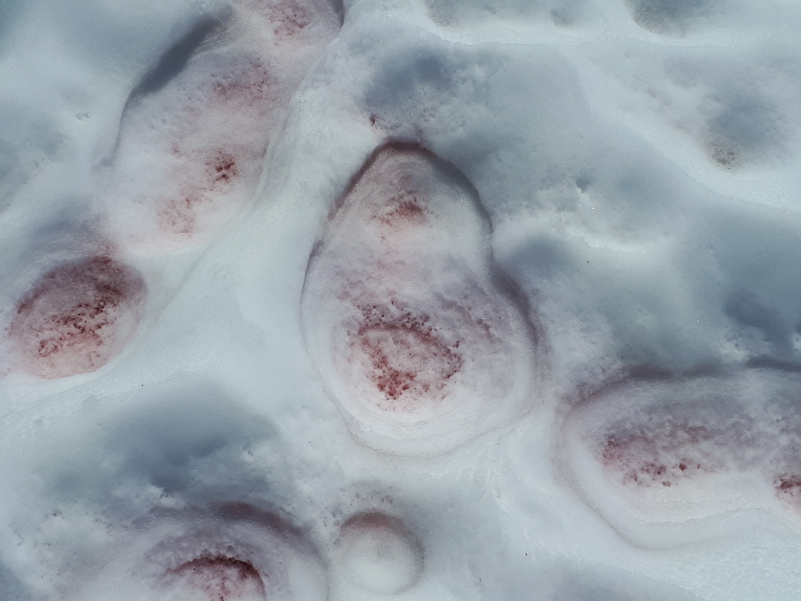
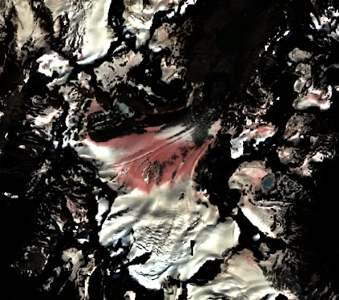
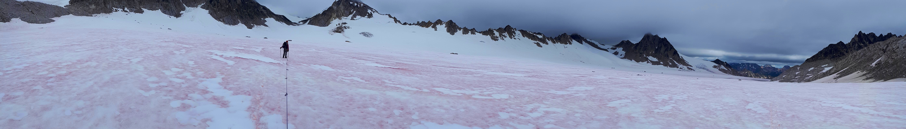

Citizen Science to Map Snow Algae
Although we typically think of snow as sterile and lifeless, in summer the snow surface is in fact teeming with life. The melting snow provides liquid water that supports blooms of single-celled algae, which feed a diverse microbiome, including microscopic grazers such as tardigrades, parasitic fungi, and symbiotic bacteria. Fascinating in their own right, this microbiome is also important for it’s role in the broader ecosystem: the algae “eat away” at the snow. To survive on the snow the algae produce red pigments, which darken the snow surface to melt pockets of snow like holes in Swiss cheese.

Snow algae could play a vital role in mountain ecosystems by increasing snow melt. The timing and release of snowmelt impacts plant phenology in alpine meadows, and provides water throughout the summer for habitats along the river. Glacial runoff cools the water temperature for salmon, and transports nutrients that fuel the base of the oceanic food web. For humans, the summer snowpack supplies water for irrigation and reservoirs, and early meltout can tip the scales towards drought and wildfire. Snow is an excellent reflective surface, so loss of snow cover means more solar energy is absorbed, resulting in more global warming in a positive feedback loop.
We still don’t know how widespread or frequent these blooms are, or whether they are increasing with climate change. As part of my PhD project I am using satellite imagery to map the distribution of snow algae blooms. I was shocked to see entire ranges with glaciers almost completely covered in pink snow.

However, satellite images can be deceptive, and other things can also cause the snow to look pink: mineral dust, alpenglow, or ash from wildfires. Before we can make a snow algae map, we need to identify which pink snow is actually algae. I trained a random forest classifier to distinguish between snow cover types by visual interpretation, essentially my “best guess”, but without ground validation we don’t know how accurate this classifier really is.
This summer, hikers and mountaineers can help validate our satellite map by visiting predicted snow algae locations. It works like this: a few days before your trip, check our web app to see if there are any active points in that region. In the field, visit points with the Gaia GPS app, take a photo, and classify the snow cover.

If you like to spend time in the mountains, please consider joining our citizen science project. As incentive, volunteers get a free 1-year Gaia GPS Premium membership on signup! For more information, please see the step-by-step instructions.
Casey Engstrom
PhD Candidate in Molecular Biology
Biologist and climber exploring the snow algae microbiome in the mountains